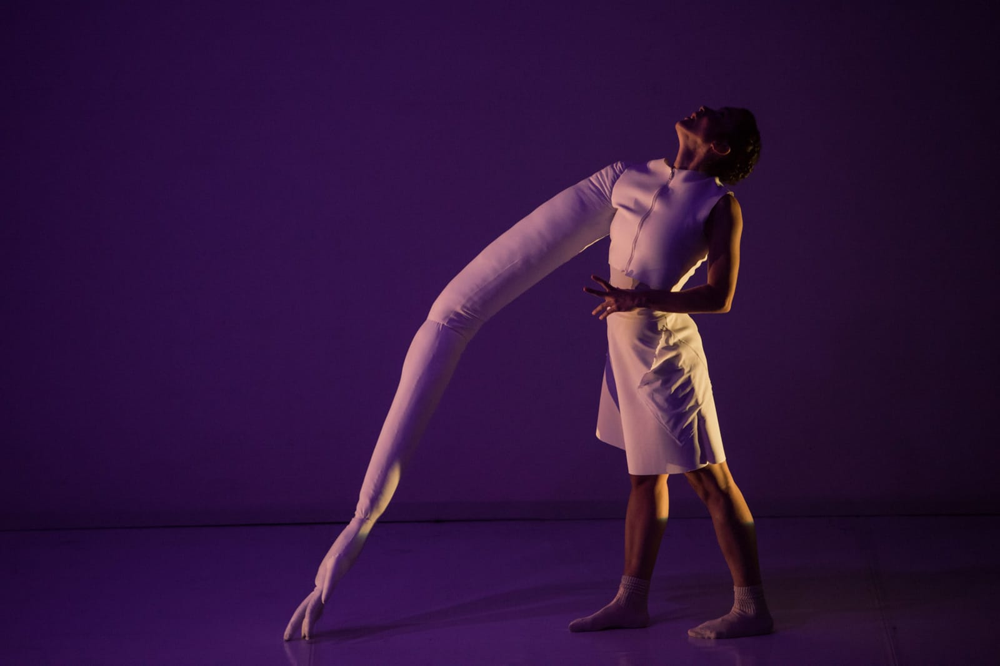
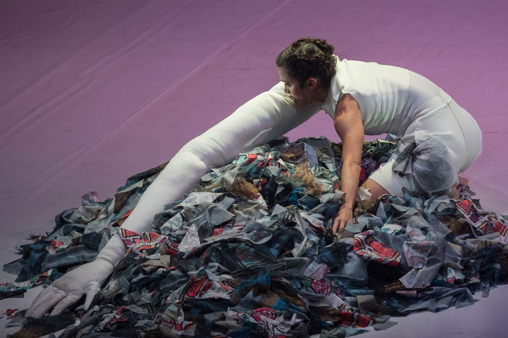
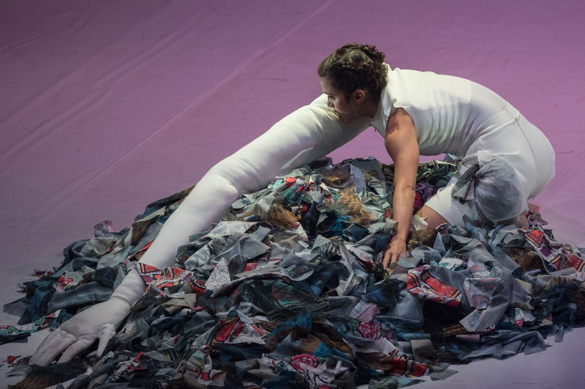

To Be Banned From Rome
To Be Banned From Rome investigates the Web’s virtual spaces inhabited by people that share the same passions and obsessions, using it as an instrument to build a clique of ideal contacts, as an ambivalent effect of the Web itself. The dramaturgy is conceived as all arts are not starkly distinguished: choreographic, musical and stage elements are devised to share a reflection that presumes the neutrality of virtual means.
Taking a cue from memetic hymns and new music genres stemming from the Web itself (Accelerationism, Vaporwave), Alberto Ricca aka Bienoise’s music rebuilds the state of attentive hypnosis experienced while scrolling down a page on a screen and, together with the movement, generates a ceaseless yet dense flux of information. In the same way, the score sheet dictates Annamaria Ajmone’s movements as she constantly transforms the space around her and the volume of her body. On the scene, cloths enclose the inhabited space, and the fabric itself becomes an emblem of an imaginary place that is soft, artificial and flexible.
All dramaturgic components push the observer further down the perceptive suggestion as a sum of atmospheres and density of materials, allowing the spectator to stay afloat in contemplation.
Production Torinodanza festival, Cab 008, Club To Club Festival.
In collaboration with The Italian New Wave.
A project made in the context of Residenze Coreografiche Lavanderia a Vapore / Piemonte dal
Vivo.
Selected by Hangar Creatività.
Promoted by Assessorato alla Cultura della Regione Piemonte with the support of MiBACT and
Regione Toscana.
Thanks to Alberto Leoni / IUTER.
Concept
Annamaria Ajmone & Alberto Ricca
Choreography and dance
Annamaria Ajmone
Live music
Bienoise (Alberto Ricca)
Space and costumes
Jules Goldsmith
Light design and technical direction
Giulia Pastore
“To be banished from Rome is but to live outside of Rome.”
Helen Keller, “The Story of My Life”
Listen to Bienoise
 
